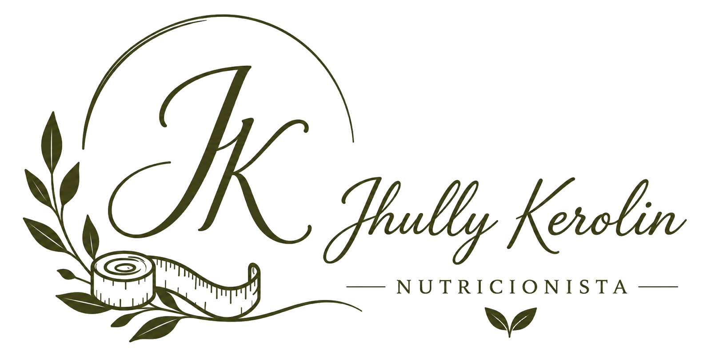

NUTRIÇÃO INDIVIDUALIZADA
Jhully Kerolin
Nutricionista • CRN-9 27958
Nutrição feita para a sua rotina, com estratégias possíveis e um plano que respeita você.

NUTRIÇÃO INDIVIDUALIZADA
Nutricionista • CRN-9 27958
Nutrição feita para a sua rotina, com estratégias possíveis e um plano que respeita você.